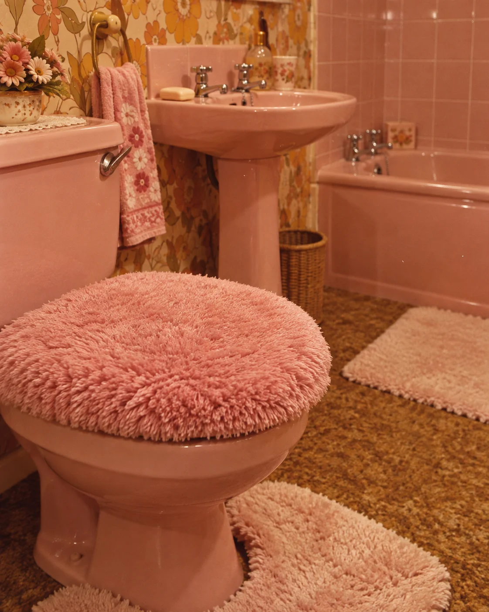
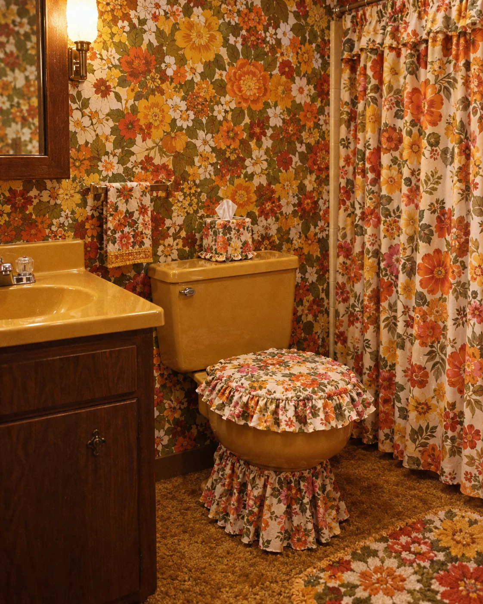
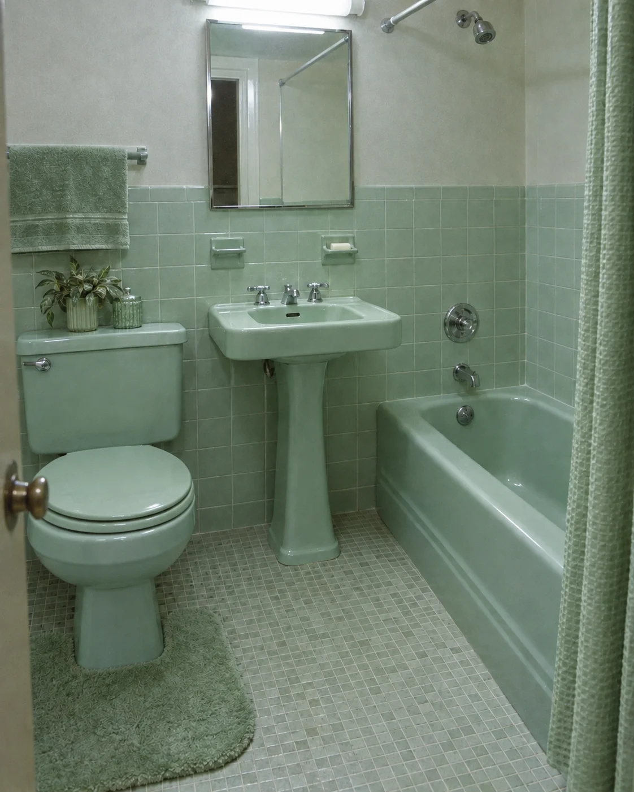
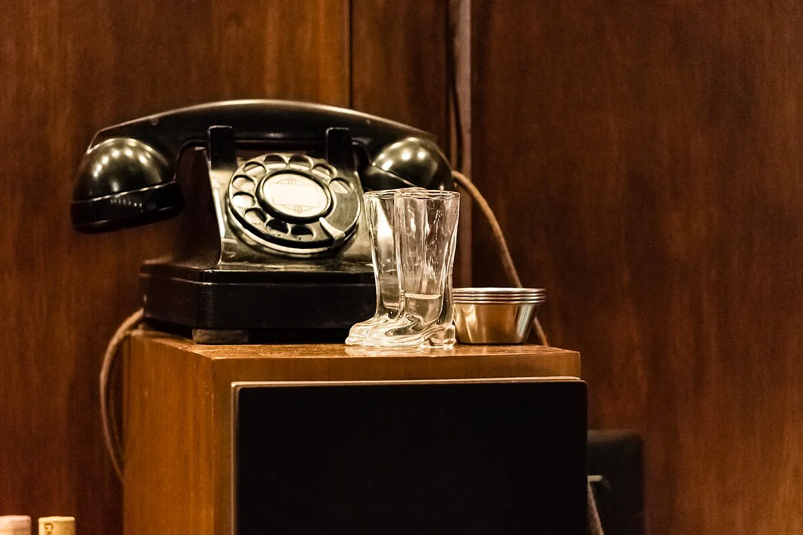
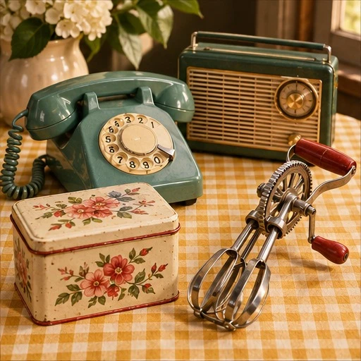

The little things we remember about Grandma's kitchen
A recipe tin, a well-used apron, and a table where there was always room for one more.
AI-created period illustration
Read the storyHOME & EVERYDAY LIFE - 1950s-70s
Pink tub, pink sink, pink toilet. Then the flowers, then the green. Did your bathroom match the rest of the house, or just match itself?
Some rooms stay in your memory by color. Not by what happened in them, just by how they looked when you switched on the light.
For a lot of families, that room was the bathroom. It was small, it was the only room in the house where the door locked, and it was almost never white.

Start with the pink, because everyone remembers the pink. The tub was pink. The sink was pink. The toilet was pink, and so was the fluffy cover on the lid, and the rug in front of it, and the towel with the flowers.
It did not happen by accident. Retro Renovation notes that pink bathrooms were wildly popular in midcentury America, thanks in part to First Lady Mamie Eisenhower, who popularized the color in the 1950s. Once the First Lady liked it, builders and catalogs followed.
The color lasted a long time on the shelf. According to Retro Renovation, Kohler's soft pink, called Peachblow, stayed in production until 1973, when a much bolder pink called Pink Champagne joined it.

Then there were the flowers. If you had a flowered bathroom, you know it was never one flower in one place. It was the wallpaper, and the shower curtain, and the towels that came in the same print, and sometimes the plastic cup by the sink.
The flowers were big and bright. Orange, yellow and red blooms as big as a dinner plate, on a wall you looked at every morning while you brushed your teeth. If your toilet and sink were harvest gold, the flowers made it a whole look.
The shower curtain was the part you remember most. It clung to your leg, it smelled like vinyl, and the pattern was always a little bolder than the room needed.

And then came the green. Fixture makers offered pale jade greens almost from the start. Retro Renovation, going through old catalogs, finds Kohler's first color palette in 1927 included Spring Green, and American-Standard sold its Ming Green from 1930 to 1962. Other makers had their own names for it, like Pale Jade and Sea Green. A green tub, a green sink, a green toilet, and tile to match.
By the 1970s the fashion had moved on. Retro Renovation says harvest gold and avocado reigned supreme then.
The Seattle Times, looking back, says pink, robin's egg blue and avocado green were all midcentury favorites in American bathrooms. By the 1970s, it says, pink in particular was considered as saccharine as a package of Sweet'N Low, and the colors drifted toward almond and ecru, and later plain white.
Many families painted over, tiled over or simply lived with the color for years, because a bathtub is not something you swap on a weekend.
In a lot of houses there was just one, and everybody shared it. Somebody was always knocking. Somebody was always in there with the water running, and somebody else was waiting in the hall with a towel.
The bath was for the whole evening. It meant bubbles in a color to match the tub, a plastic duck on the edge, and a hand on the faucet that knew exactly how far to turn it. When the water drained, the tub shone in that same color, and the mirror stayed fogged for an hour.
Whatever the color on the walls, that is the one you see when you close your eyes and think about home.
You may also remember what went with the suite. The rug that matched the tub. The cover on the toilet lid. The tissue box in a flowered dress. The towels nobody was allowed to use, set out for company.
Everything was coordinated, whether you liked it or not. That was the style.
The funny part is what happened next. The Seattle Times reported in 2010 that pink had come back in vogue, with people choosing to keep a vintage pink bathroom instead of taking a sledgehammer to it.
A 2023 Guardian piece from Britain reports much the same about avocado. A supplier says estate agents used to tell people an avocado suite hurt the value of a house, and that now customers ask for coral pink or even avocado, including one big commercial job for 20 avocado toilets.
So the color that was once the thing to rip out has become the thing to hunt for.
A colored bathroom was never really about the toilet. It was a family trying to make the smallest room in the house feel like it was part of something modern and cheerful.
Which one was in your house: the pink, the flowers, or the green? And which one would you never go back to?
Send this to someone who grew up with the same bathroom. They will remember the rug.
All images in this article are AI-generated illustrations inspired by the period, not historical photographs.
A recipe tin, a well-used apron, and a table where there was always room for one more.
AI-created period illustration
Read the story
Remember the rotary phone? The long cord, the slow dial, the one phone in the house. A warm look back, with a question for you.
Read the story
10 questions about familiar objects. No timer.
AI-created period illustration
Take the quiz← Back to Dear Old Days · All articles · About · Privacy policy · Photo credits